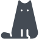

ABOUT
고양이가 귀엽더라도 간식은 적당히 줘야 합니다.
-

뚱뚱한고양이
뚱뚱한 고양이 사진입니다.
MORE
-
뚱뚱한고양이
고양이가 좋아하는 간식입니다.
MORE
-
간식
고양이가 좋아하는 장난감입니다.
MORE
SERVICE
뚱뚱한고양이
캣닢이란?
아시아와 유럽이 원산지인 허브의 한 종류로 학명은 네페타 카타리아(Nepeta cartaria)입니다.
우리나라 이름으로는 '개박하'라고 부르며 아래 사진처럼 잎 끝이 톱니처럼 자라고, 건조시켜 말리면 박하향이 나서 개박하라 불린다고 합니다.
고양이가 워낙 좋아해서 Catnip이라 이름붙였다고 하며, 다른 말로는 Cat-Mint라고도 합니다. 6~7월 하얀 꽃을 피우는 다년초로, 키는 50cm~1m까지 자라고 포기 전체에 회갈색의 가늘고 흰 솜털이 나 있는 것이 특징입니다. 꽃과 잎, 줄기 등에 박하와 비슷한 달콤하고 청량감 있는 향기가 나는데 건조시키면 풍미가 더 강해집니다.
보통 야생 고양이는 자신의 소화촉진과 헤어볼 예방을 위해 주기적으로 캣닢을 섭취한다고 알려져 있습니다.